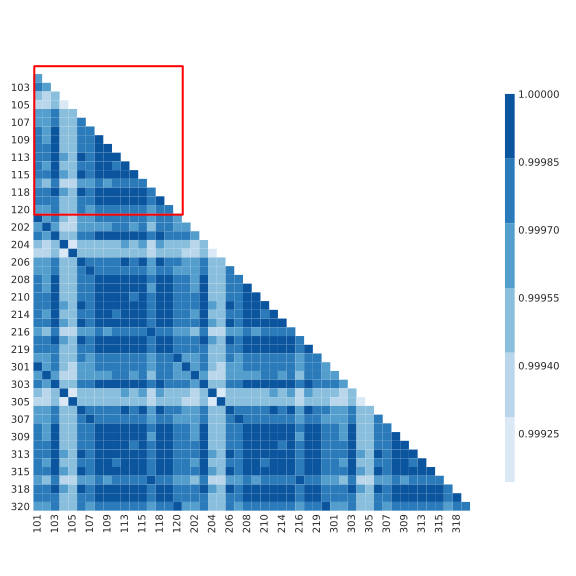

Load Profiles and Metrics
Jonas Kersulis
June 1, 2018
Introduction
Deliverables
- Grant proposal refers to load profile times series metrics
Comparison to system-wide metrics
- Same strategy
- Study data to distinguish physical phenomena from synthetic features
- Distill into minimal set of metrics for efficiency.
- Less data
- Last time we had forty networks.
- This time we have a handful of datasets
- Approximately 40 original load profiles.
- Less literature
- More focused on short-term forecasting
- Discovering as we go
Data sources
A. WECC
Source
- Source: CAISO
- Western US (summer-peaking region)
- 8,784 hourly timestamps spanning 2004
- Two forms
- Bus-level disaggregation
- Aggregated version with just the 21 original load profiles
B. RTS 96
- Bus-level “disaggregation” of one load profile (of questionable provenance)
- 8,736 hourly timestamps spanning 1996 (except Dec. 30-31, so 364 days)
C. RTE
- Source: RTE
- France (winter-peaking region)
- Area-level aggregation for 12 divisions
- 80,304 half-hourly timestamps spanning 2013 to July 2017 (578 days).
- Realistic, broad, recent.
D. RTS GMLC
- Source: RTS GMLC project on GitHub
- 3 synthesized load profiles, one for each RTS 96 area
- 105,408 5-minute timestamps spanning 2020 (366 days)
Data details
Original vs derived
- Original: directly from measurement/synthesis
- Derived: dependent on original (e.g. scaled version)
Original vs derived
- WECC: 21 original time series, disaggregated to bus level via load participation factors.
- RTS 96: 1 original load profile.
- RTE: 12.
- RTS GMLC: 3 original (apparently synthesized) load profiles.
~35 total original load profiles, but ~200 total load profiles across the 4 datasets.
Tidy datasets
- Each dataset now available in “tidy” form
- Single DataFrame object that can be exported to any tabular data format.
Significant for RTE data especially, which was spread across dozens of TSV files in four directories using two different character encodings.
Time domain analysis
Seasonal variation
WECC

RTS 96

RTE

Cross-correlation analysis
Cross-correlation matrices
WECC

Aggregated WECC

RTS 96

Correlation coefficient distributions

Deriving a correlation metric

Cross-correlation metric results
Fraction of correlation coefficients above 0.98:
| Dataset | Fraction |
|---|---|
| wecc | 91.59% |
| rts96 | 0.00% |
| wecc_agg | 100.00% |
| rte | 98.48% |
| ercot | 97.22% |
| gmlc | 100.00% |
Sigular values

Effects of aggregation